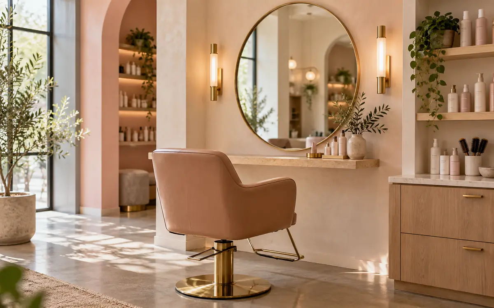

Honey balayage
Full colour, from £85, 120 minutes. Often by Theo.
Painted by hand from the mid-lengths to the ends: warm honey over your natural brown, so the roots grow out softly.
The colour
No foils at the root, so there’s no line as it grows. We place the lightest pieces where the light falls on your face.
Keeping it
A refresh every three to four months. A purple shampoo once a week if it starts to turn brassy.
A patch test is needed at least 48 hours before your first colour with us. It takes five minutes: pop in any time we’re open.